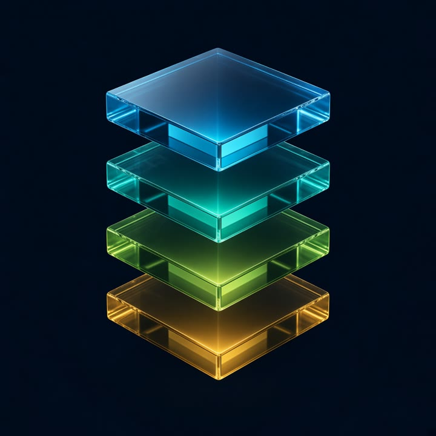

Delivery is a sequence, not a ticket.
From business intent to a change that holds in production.
Name → calendar → prove → cut over
The delivery chain
Illustrative sequence · A release is not complete until its outcome has been checked.
Decision scenarios
View all examplesReal situations. The decision, the evidence, and the next action sit on the card.
- Decision
- Change window
- Evidence
- Freeze, then a business-hours check.
- Next action
- The middleware patch waits.
- Decision
- Dependency map
- Evidence
- Owner, blocker, and date on one plan.
- Next action
- Status names the wait.
- Decision
- Done that survives the room
- Evidence
- Rollback steps and who gets paged.
- Next action
- Write the reverse, then call it.
- Decision
- Watch the service
- Evidence
- Error rate and queue depth, 30 minutes.
- Next action
- Roll back on the written path.
Delivery gates
Each stage has a rule. Pipeline green is not proof.
- Named outcomeWhat is this change for?
- OwnerWhich person owns it?
- Not a titleA ticket title is not the outcome.
- ClocksPlatform, security, and the business freeze.
- One windowA date and a check, not a chat slot.
- HoldColliding calendars stop the signal.
- Dependency ownerWho owns the wait, the blocker, and the date.
- Blast radiusWhat the change can touch.
- Before the callThe evidence pack exists first.
- Named ownerWho is accountable for the change?
- Rollback planHow do we get back if needed?
- Monitoring planWhat do we watch, and for how long?
- CommunicationWho gets paged, and when?
- Watch windowThirty minutes after cutover is the working example.
- SignalsError rate and queue depth.
- Written reverseThe rollback already exists.
- Still openThe chain stays open until the outcome is checked.CheckedThe watched signals held. Recovery stays in reach.
The four layers
From business outcome to operational evidence.

- Business outcomeWhy the change matters.
- Delivery systemPeople, dependencies, calendars.
- Engineering controlsTest, release, reverse.
- Operational evidenceHow you know it held.
Measures of success
Flow says how the work moves. Outcome says whether it held. Activity is not a measure.
Delivery flow
Operational outcomes
Illustrative trace. Name the figure when this portfolio has measured it.
Name them beside the four keys. Publish a figure only when this portfolio has measured it. Velocity stays off this path.
The leadership principle
A change is not done when the pipeline turns green. It is done when the intended outcome is verified — and the team knows how to recover if it isn't.
Technology delivery is how a change earns confidence: in the sequence, in the team, and in the outcome.
Tool picker · by constraint
Ladder
- Named intent and owner
- Calendars and a dependency map
- Evidence pack: blast radius, metrics
- Rollback and page path written
- Small sequenced change, or a flag
- Watch whether it held
Other jobs
Same spine. These cases stay on the card.
| If the real problem is… | Use | Example case |
|---|---|---|
| Must reverse without a weekend restore | Feature flag | New middleware route ships dark; flip on for one tenant, flip off if error rate moves — code deploy ≠ user release |
| Too many “ready” items, no sequence | Priority gate | Three Azure changes drafted in an afternoon; only the cert that blocks Friday’s window goes first — “not yet” is a decision |
| AI made drafts cheap; sequence got worse | Human Approve | Copilot wrote the runbook; a person still owns what next and why not yet — same gate Orbit uses for publish |
| Snowflake middleware, or env drift | Infra as code | App setting and network rule in Bicep (or Terraform); the next environment is a replay, not a memory |
| Status lives in a chat thread | Visible work | Blocker named on the board item; standup does not replace a written wait |
| Need fast feedback on main, not a long-lived branch | Small batches on trunk | Incomplete UI stays behind a flag; main stays releasable — Fowler’s CD test, not a two-week merge |
| Don’t know if delivery is actually getting healthier | Four keys | Lead time and change-fail rate next to the Azure ops pack; velocity theatre stays off this path |
Anti-patterns
- Ticket title as the outcome
- Calling pipeline green with no rollback
- Private AI speed as team capability
- Shipping while calendars still collide
- Chat-thread status with no named blocker
- Automating priority or the “not yet” call
- Long-lived branches instead of flags
- Framework shopping (SAFe/Scrum) before sequence